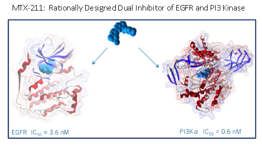

Dr. Christopher Whitehead, PhD, MBA, Co-Founder has close to 20 years of research and development experience in biotechnology and pharmaceutical companies. He has held several research and business development positions at Pfizer and ProNAi Therapeutics. He made pivotal contributions to solving the first crystal structure of MEK.
Dr. Judith Sebolt-Leopold, PhD, Co-Founder, has 23 years of experience in the pharmaceutical industry. She has held research and senior management positions at Parke-Davis/Pfizer, where she developed a strong track record of advancing oncology drug candidates into the clinic. She pioneered the MEK inhibitor field and led efforts to introduce the first orally active MEK inhibitor, CI-1040, into clinical trials. She currently co-leads the Developmental Therapeutics Program at University of Michigan's Rogel Cancer Center.
David Lowenschuss, JD, Chief Business Officer, has over 20 years of experience working in the pharmaceutical and biotechnology industries. He is a co-founder of Gemphire Therapeutics, Inc., where he is a Board Member and served as Chief Legal Officer. He also co-founded Michigan Life Ventures, LLC and currently serves as its Chief Legal Manager. Mr. Lowenschuss served as a Corporate Counsel and later Michigan Legal Site Head at Pfizer.
We are honored to have the following precision medicine thought leaders serve on our scientific advisory board.
Dr. Scott Kopetz, MD, PhD, Associate Professor, Department of Gastrointestinal (GI) Medical Oncology, Division of Cancer Medicine at the University of Texas MD Anderson Cancer Center, received his MD from John Hopkins School of Medicine and his PhD from the University of Texas, Graduate School of Biomedical Sciences. He carried out his residency in Internal Medicine at Duke University Medical Center and his fellowship in Medical Oncology at the University of Texas MD Anderson Cancer Institute. He is dual-boarded in Medical Oncology and Internal Medicine. Dr. Kopetz's laboratory is engaged in understanding of the role of protein tyrosine kinases in cancer maintenance and growth with an emphasis on evaluation of targets and compounds pertinent to the treatment of metastatic colorectal cancer.
Dr. Neal Rosen, MD, PhD, is the Enid A. Haupt Chair in Medical Oncology at Memorial Sloan Kettering Cancer Center. He received his MD, PhD at Albert Einstein College of Medicine. Dr. Rosen did his residency at Peter Bent Brigham Hospital and was a fellow of the National Cancer Institute. He is dual boarded in Internal Medicine and Medical Oncology. Dr. Rosen's laboratory focuses on understanding biochemical mechanisms underlying phenotypes caused by tyrosine kinase activation in epithelial tumors and developing new therapeutic strategies.
Dr. Anthony Tolcher, MD, FRCP(C). Dr. Tolcher is CEO and Co-Founder of NEXT OncologyTM. He received his MD from the University of British Columbia and carried out his residency in Internal Medicine at University of Toronto. Dr. Tolcher was a fellow at the University of British Columbia and at the National Cancer Institute. He has founded one of the largest oncology Phase I programs in the world and is a premier oncology clinical trialist. He is a key opinion leader in molecular genetic targets for cancer therapy and the development of new anticancer agents.
MTX-211, designed through iterative rounds of synthesis, is a novel small molecule that represents a first in class opportunity to selectively inhibit EGFR and PI3K family members. It exhibits favorable pharmaceutical properties and the requisite profile for lead compound advancement: molecular weight of 478, clogP 4.69, rule of 5 compliant, facile synthesis (3 steps from readily available starting materials), 78% oral bioavailability, metabolic stability >60 minute half-life in human and mouse microsomes, cmax 10-100x higher than cellular EC90, strong selectivity toward EGFR and PI3K family members, and pharmacodynamic modulation of EGFR and PI3K pathway signaling in vivo and single agent efficacy in clinically relevant KRAS and BRAF mutant patient-derived colorectal (CRC) xenograft models. By virtue of its dual inhibitory profile against both EGFR and PI3K, MTX-211 is effective against resistance mechanisms to MEK inhibitor monotherapy. This is evidenced by a 300 to 500% increase in life span seen in KRAS or BRAF mutant CRC PDX-bearing mice co-treated with MTX-211 and a MEK inhibitor compared to single agent control arms. Promising preclinical data provide critical proof of concept to validate a clinical development path for this agent that targets the KRASmt or BRAFmt colorectal cancer patient subpopulations. Chemical development of MTX-211 has been initiated to deliver cGMP quality active pharmaceutical ingredient needed for IND-enabing toxicology studies.
Media Center | Stories
Venture Accelerator: Mekanistic Therapeutics
Mekanistic Therapeutics, a startup company focused on the development of cancer therapeutics, will soon move into the U-M Tech Transfer Venture Accelerator, where company founders Drs. Judith Sebolt-Leopold and Christopher Whitehead will progress with their clinical trial development and fundraising efforts. In their University of Michigan lab, Sebolt-Leopold and Whitehead, discovered and designed small molecules that can selectively hit two cancer targets simultaneously with reduced risk of drug-drug interactions. Sebolt-Leopold has 20+ years in the pharmaceutical industry and a strong track record of advancing oncology drug candidates into the clinic. Specifically, her experience includes pioneering the discovery and development of MEK inhibitors, now in clinical use for the treatment of melanoma. Whitehead, whose computational chemistry expertise complements the cancer biology expertise of his co-founder, has almost 20 years of research and development experience in biotechnology and pharmaceutical companies. The pair first worked together at Pfizer on the MEK inhibitor research team. Working together again at University of Michigan, they share a common vision for the need to design more effective drugs to circumvent resistance mechanisms commonly encountered with currently available kinase-targeted agents. "The mission of Mekanistic Therapeutics is precision polypharmacology," Whitehead explained. The team discovered and developed a molecule to selectively and concurrently impair EGFR and PI3K signaling in cancer cells. EGFR and PI3K are frequently found to be concurrently dysfunctional in a variety of tumor types, leading to poor prognosis. Their lead compound, MTX-211, represents a first-in-class molecule that selectively and potently inhibits both of these critical oncogenic kinases, which are known to drive progression in a number of tumor types, including colorectal cancer. Currently, there are no approved treatments for patients diagnosed with metastatic KRAS mutant colorectal cancer. MTX-211 is innovative because it attacks KRAS oncogenic signaling using two independent mechanisms, serving effectively as a combination approach in a single molecule. Mekanistic recently received a STTR grant that supports its move into the U-M Tech Transfer Venture Accelerator. Sebolt-Leopold and Whitehead previously received translational funding from MEDC's MTRAC program, which is co-managed by FFMI and U-M Tech Transfer, as well as funding from the U-M Cancer Center to identify a lead compound. They are currently working with Tech Transfer mentors-in-residence with expertise in drug development and regulatory strategy to develop a commercialization plan to take their lead compound into human clinical trials and broaden their pipeline.
Mekanistic Therapeutics, LLC
U-M Venture Accelerator, 1600 Huron Parkway Ann Arbor, MI 48109
P: 734-998-8327